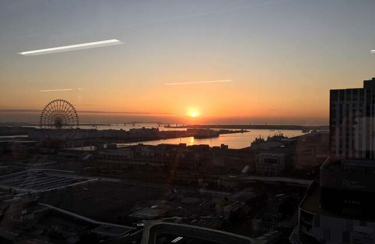

About
- 池田昌隆 Masataka IKEDA
- Masataka IKEDA
- 東京都文京区小日向2-11-8 CROSS小日向203
- tel: 090 3211 7592
- url: mayoson.github.io
- mail: masataka.ikeda@gmail.com
20代〜50代まで、私の関心も多方面に及びかつ変遷し続けてまいりましたが、それぞれのステージで共通するものは、学び続けたい、社業へそして社会へ何かしら貢献したいという強い希望や意欲であり、これはまだ現在に至っても失われておりません。
そのため、新しい技術やそれを支える普遍的な知識の習得も積極的に行っている日々でございます。また、私の実績と言えるものは、すべてチームとしてなし得たものであり、私単独での実績などは一つもございません。
チームとしての成果を第一と考えてきたため、コミュニケーションも最重要視し、多くの優秀な人材を育成してまいりました。
現在50代後半の私に何ができるかはわかりませんが、ご採用いただければ必ず社業に貢献できるものと考えております。
Works
- 
Carrier
- 1997.03.31
- 筑波大学第3学群基礎工学類物資分子主専攻卒業
- 1997.04.01
- 株式会社フジテレビジョン入社
- 1994.04.01
- ニューヨーク支局勤務
- 1995.07.01
- 郵政省（現総務省）通信政策局技術開発推進課出向
- 2013.07.01
- 技術局制作技術センター報道技術部長
- 2016.07.01
- 総合技術局IT推進センター室長
- 2022.03.31
- 株式会社フジテレビジョン早期退職